장효준도 실수를 합니다. 그래서 기록을 남깁니다.
안녕하세요, 장효준입니다.
여행 앱의 추천 서버에서 순찰 로봇의 펌웨어까지, 올해는 분야를 가리지 않았습니다. 대신 순서는 늘 같았습니다. 먼저 재고, 숫자가 가리키는 곳을 고치고, 닿지 못한 결과도 남깁니다.
GitHub2026 포트폴리오
12편
// 같은 파일을 두 에이전트가 잡으면? claim("index.html", ttl=10m) → 먼저 잡은 쪽이 쓰고 → 늦은 쪽은 쪽지함으로
선점 장부와 쪽지함을 나눈 이유, 그리고 그 선택을 어떻게 검증했는지.
인식 실패를 사용자가 고치게 둔 선택
센서 값보다 먼저 정한 규칙
5개 작업
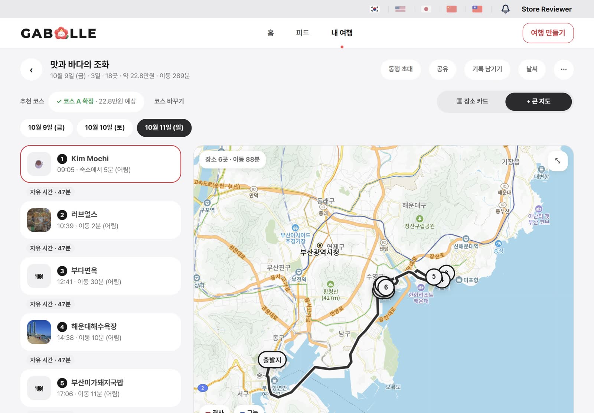
여행 기록을 지도로. 문제, 맡은 범위, 선택과 검증을 한 사례로 정리합니다.
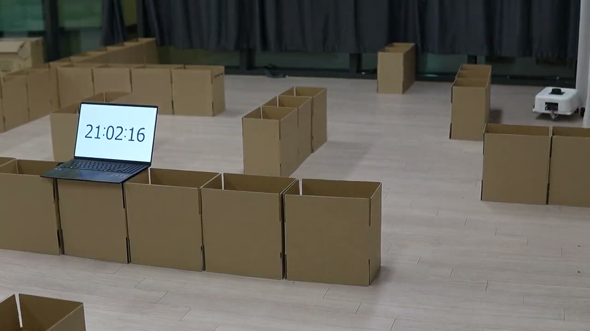
자율주행 미니카
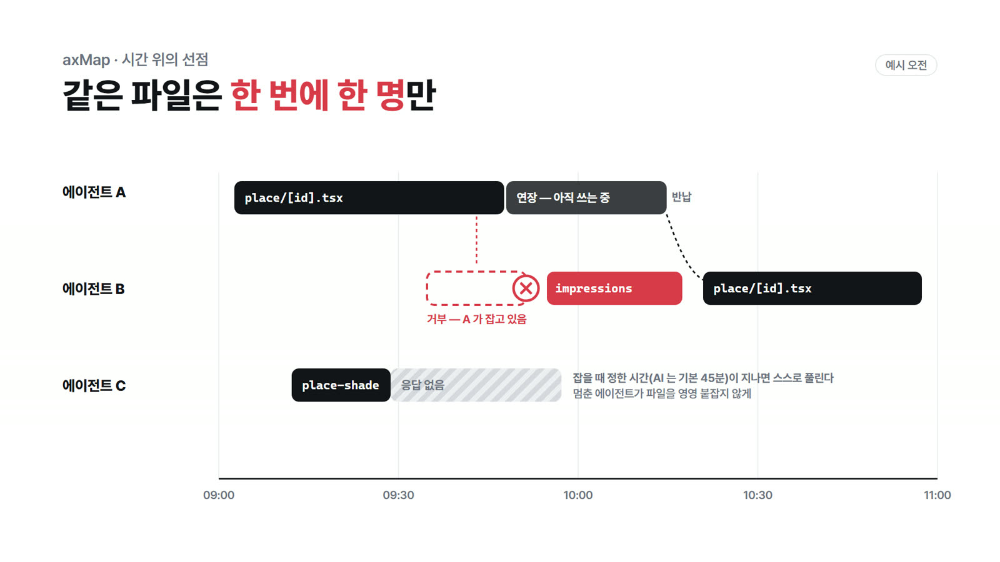
에이전트 협업 장부
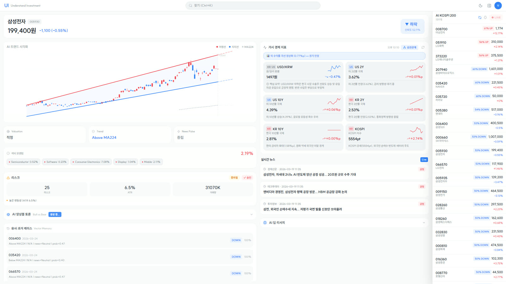
투자 개념 학습
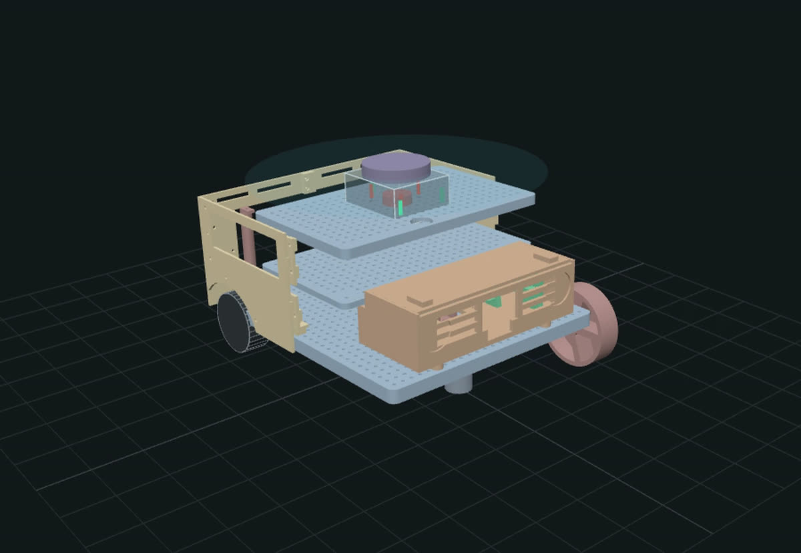
조리 영상 동작 경계 검출
3장 · 날짜순 벽
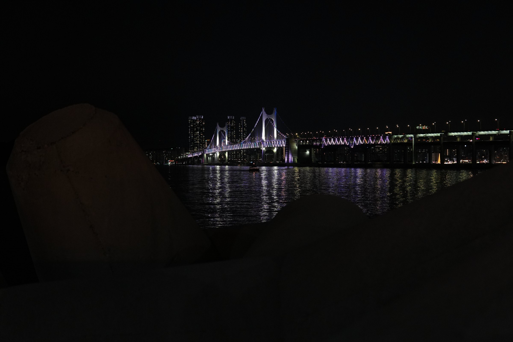
최종 발표에 쓴 사진. 시리즈를 누르면 한 장씩 크게 넘겨 봅니다.
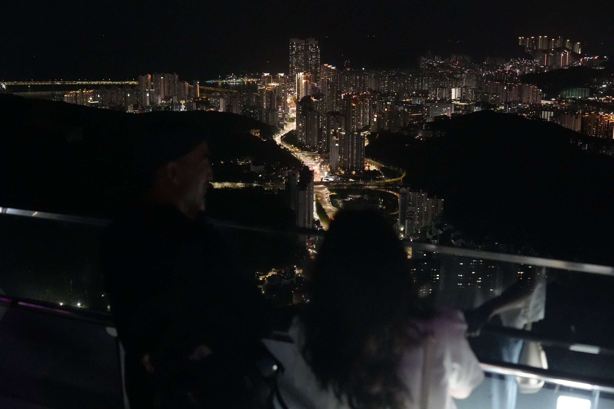
사진 자리 · 캡션은 함께 정하기
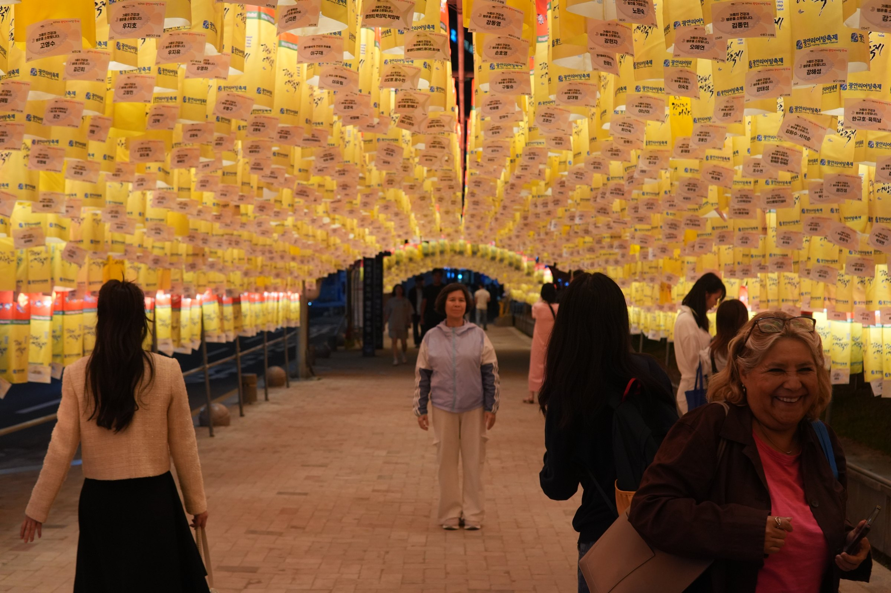
5권
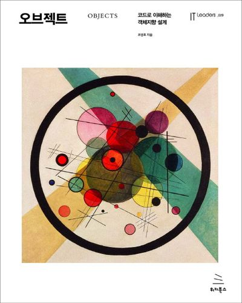
역할과 책임으로 다시 본 가볼래 구조.
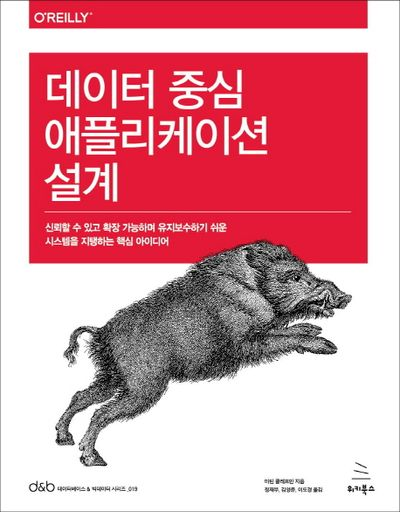
복제와 일관성, 어디까지 필요했나
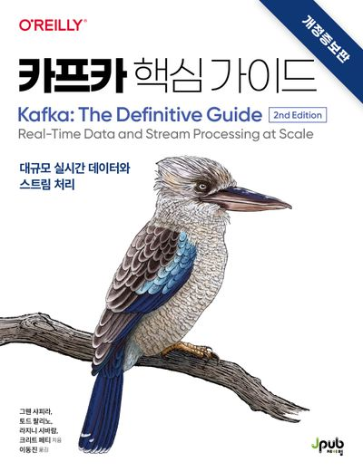
쪽지함을 큐로 볼 때